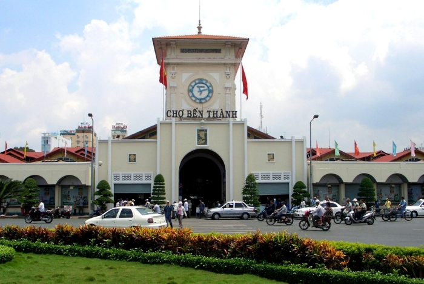

Chợ Bến Thành ở đâu? Kinh nghiệm đi chợ cho khách du lịch
Chợ Bến Thành ở đâu và có gì hot mà được mệnh danh là biểu tượng của thành phố Sài Gòn đầy sôi động, nhộn nhịp? Cẩm nang du lịch sau đây sẽ giúp bạn trả lời những thắc mắc này một cách chi tiết nhất.

Cùng tìm hiểu chợ Bến Thành ở đâu? Khám phá những nét đặc trưng của biểu tượng Sài Gòn này.
Trở thành một trong những biểu tượng lâu đời của thành phố Hồ Chí Minh, chợ Bến Thành ở đâu, thuộc quận mấy, có những đặc điểm nào hấp dẫn thường là những thắc mắc chung trong lòng mọi du khách. Hãy cùng khám phá chợ Bến Thành có gì ngay tại đây nhé.
- Chợ Bến Thành ở đâu? Giới thiệu về chợ Bến Thành quận 1
- 1.1. Địa chỉ chợ Bến Thành ở đâu?
- 1.2. Thông tin về chợ Bến Thành - Lịch sử 100 năm hình thành phát triển
- 1.2.1. Nguồn gốc và xuất xứ tên gọi chợ Bến Thành ở đâu?
- 1.2.2. Lịch sử hình thành chợ Bến thành
- Chợ Bến Thành xưa (từ năm 1859 - 1911)
- Chợ Bến Thành xưa (từ năm 1912 - nay)
- Kinh nghiệm đi chợ Bến Thành quận 1
- 2.1. Cách di chuyển đến chợ Bến Thành
- Xe buýt: Các tuyến xe đi qua gần chợ Bến Thành là 03, 04, 152, 19, 20, 39, 53, 93, 96. Các điểm dừng thường cách chợ khoảng 200 - 600 mét, mất khoảng 4 - 8 phút đi bộ.
- Xe máy, xe ô tô: Xung quanh chợ có khá nhiều điểm trông giữ xe tư nhân với các mức giá khác nhau, có nơi rẻ từ 10.000 - 20.000 VNĐ/lượt nhưng cũng có nơi “chặt chém” với giá cao hơn, đặc biệt là vào những dịp cuối tuần, lễ Tết đông đúc, du khách nên chủ động hỏi giá trước khi gửi.
- Taxi: Cách thức thuận tiện nhất với những ai không thông thạo phố xá Sài thành là gọi taxi, để tài xế chở mình đến ngay trước cổng chợ.
Để trả lời câu hỏi “Chợ Bến Thành ở quận mấy?”, du khách cần nắm rõ thông tin rằng, chợ nằm tại đường Lê Lợi, phường Bến Thành, quận 1, thành phố Hồ Chí Minh. Cổng chính của chợ Bến Thành, nơi nhìn ra quảng trường Quách Thị Trang với biểu tượng ngôi tháp đồng hồ ba mặt, còn được gọi là Cửa Nam.
Tìm hiểu chợ Bến Thành nằm ở đâu trên ứng dụng bản đồ chỉ đường
Chợ thường bắt đầu mở cửa từ 4 giờ sáng tới 7 giờ tối nhưng để được chứng kiến cảnh tượng các quầy hàng
hoạt động nhộn nhịp nhất, du khách nên tới đây vào thời điểm đa số người dân bắt đầu đi học, đi làm cho đông
vui.
Bên cạnh chợ Bến Thành cũng có không ít địa chỉ tham quan thú vị khác rất gần như là Landmark 81, bưu điện
thành phố, Dinh Độc Lập, “tòa nhà trái bắp”... nên bạn có thể kết hợp cho hành trình du ngoạn của mình sao
cho hợp lý và thuận tiện nhất.
Trải qua hàng trăm năm lịch sử, chợ Bến Thành được xem như một biểu tượng đặc trưng của Sài Gòn. Thế nhưng, không phải ai cũng biết xuất xứ của cái tên này đến từ đâu. Do ngày xưa khu chợ này nằm cạnh bên một bến sông, thường xuyên tiếp đón khách vãng lai và quân nhân vào thành nên từ đó, tên chợ cũng được lấy là chợ Bến Thành.
Tuy nổi tiếng trong lòng người Sài thành nhưng không phải ai cũng được giới thiệu về chợ Bến Thành rõ ràng từ xuất xứ và nguồn gốc tên gọi.
Với mục đích giao thương, trao đổi các mặt hàng thiết yếu, từ trước thời Pháp thuộc, chợ Bến Thành đã xuất hiện và đón vô số lượt người, ghe xuồng chở hàng hóa tấp nập trên sông. Tuy nhiên, khi giặc Pháp chiếm đóng, chợ bị đốt lụi tàn và phải mất một năm mới được hồi phục lại tại chính vị trí cũ.
Thông tin về chợ Bến Thành thuở xưa với vẻ đẹp cổ kính.
Sau thời gian dài sử dụng, chợ dần xuống cấp, có nguy cơ sụp đổ bất cứ lúc nào nên được người Pháp xây lại sau khi lấp một ao sình mang tên Bồ Rệt. Từ năm 1912, phải mất thêm 2 năm, nhà thầu thi công Brossard et Maupin của Pháp mới hoàn thành công trình này. Các kiến trúc cũ từ đó được bảo toàn cho đến ngày nay dù chợ Bến Thành đã trải qua một cuộc cải tạo và sửa chữa lớn vào năm 1985.
Bên trong chợ Bến Thành được cải tạo lại để trở nên hiện đại và khang trang hơn nhưng vẫn giữ nguyên được phong cách kiến trúc xưa.
Để đảm bảo “đi đúng nơi, về đúng chốn”, du khách cần tìm hiểu trước chợ Bến Thành ở đường nào, sau đó mới có thể xác định phương thức di chuyển hợp lý. Có 3 cách mọi người thường lựa chọn như là:
Bạn nên xác định rõ chợ Bến Thành ở quận mấy, đường nào trước khi tự di chuyển bằng phương tiện cá nhân.